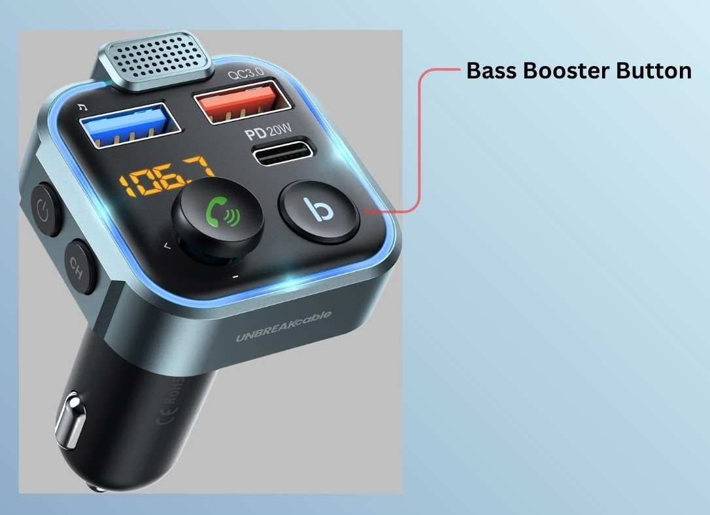
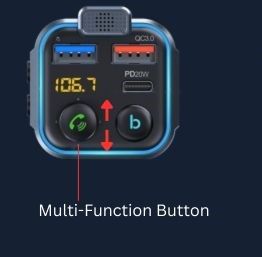

Adjusting the audio of your car radio, your connected devices, and utilizing the Bass
Boost Button improves the quality of sound and provides bass music quality.
To obtain the best volume and audio quality, a baseline audio needs to be set and the
bass boost button on the device can be used to improve the richness of sound as it
plays through the car's radio.
-
Set Baseline Volume.
A baseline volume level refers to an optimal, undistorted sound level, which
can be achieved by adjusting volume of the car's radio and/or the connected
device.
-
Adjust the volume of the car radio to 1/3 or 1/2 of its capacity. To
avoid audio distortion or static sound, do not exceed 2/3.
-
If using Bluetooth Mode, adjust the volume of the connected mobile or
electronic device to 2/3 or 4/5 of its sound capacity. Do not set
connected device to full volume.
-
Use Bass Booster Button
This button can be used to give audio a stronger bass, creating a more dynamic
sound effect through the car's radio.
-
Locate the Bass Button on the device

-
Note: Long press Bass Booster 1x to turn ON/OFF the
Ring Light on the transmitter device.
Short Press the button 1x while music is playing to activate.
Short pressing 1x again will turn off Bass Booster
-
Tip: Play music or sound for this step to
accurately adjust volume
Toggle the volume up/down on the device using the Multi-Function joystick to
fine-tune the volume on the transmitter.

After completing these steps, the sound playing through your car's radio should be at
its optimal audio quality.